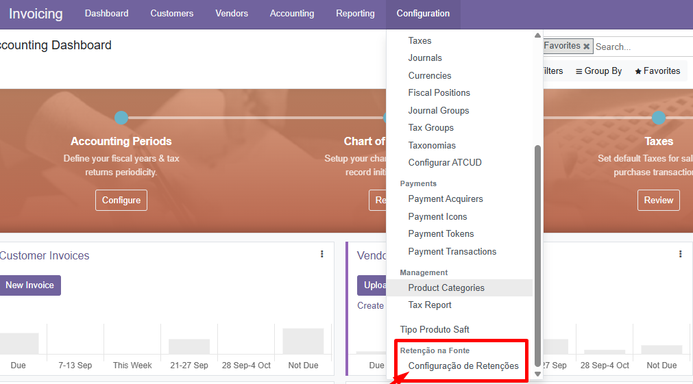
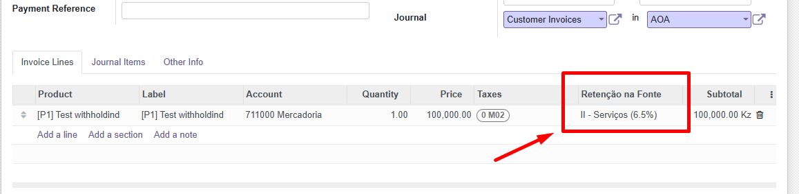
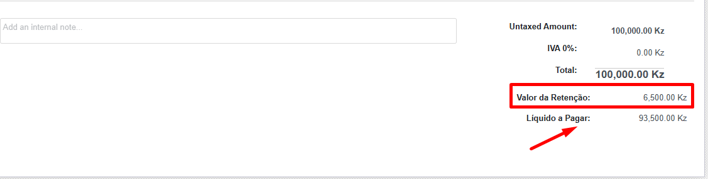

🇦🇴 DL Withholding Tax — Angola
🧾 Add withholding tax (Retenção na Fonte) support to Odoo 15 — tailored for Angolan fiscal rules and SAFT export requirements.
Legal / SAFT note: This module can add the withholding_tax field to the SAFT file (as required by local AGT rules). Always confirm your SAFT configuration with your tax advisor or the AGT requirements for your company. ⚖️
✨ Key Features
- ⚙️ Configure multiple withholding tax types (different laws / rates).
- 📄 Apply withholding per invoice line (supplier invoices / vendor bills).
- 🧮 Automatic calculation of withholding amount and net payable.
- 🖨️ Display withholding on invoice form and PDF reports.
- 🗂️ Optional inclusion of withholding in SAFT Angola export for AGT compliance.
⚙️ Installation
- Copy the folder
dl_withholding_tax_ao to your Odoo addons directory.
- Restart the Odoo service.
- Activate Developer Mode.
- Apps → Update Apps List → search for "Withholding Tax Angola" and Install.
🧑💻 Usage
Configure rates
- Accounting → Configuration → Withholding Tax (Retenção na Fonte).
- Create new tax types or edit existing ones — set percent and base rules.
Apply withholding on an invoice
- Create a vendor bill (supplier invoice).
- On an invoice line, select the desired Withholding tax.
- Save the invoice — the withholding amount and net payable will show in totals.
📸 Screenshots
Images below illustrate configuration and invoice flow.



🔍 Example
Invoice: 100,000 Kz — Withholding 6.5% → Withholding = 6,500 Kz, Net payable = 93,500 Kz.
💬 Support
Compatibility: Odoo 15.0 | License: AGPL-3
👨💻 Developed by DIGITALUB ANGOLA, LDA — digitalub.ao